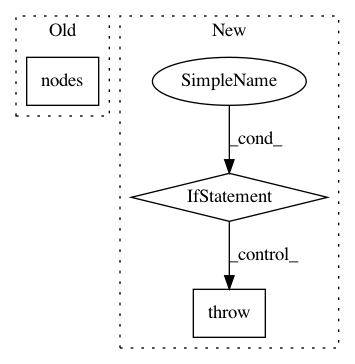

bcf6d0a188ee9ba868c1de01c347f813e3aaa35c,stellargraph/mapper/full_batch_generators.py,FullBatchNodeGenerator,__init__,#FullBatchNodeGenerator#Any#Any#Any#Any#Any#Any#Any#,111
Before Change
G.check_graph_for_ml()
// Create sparse adjacency matrix
self.node_list = list(G.nodes())
self.Aadj = G.to_adjacency_matrix()
// Power-user feature: make the generator yield dense adjacency matrix instead
After Change
transform=None,
teleport_probability=0.1,
):
if self.multiplicity is None:
raise TypeError(
"Can"t instantiate abstract class "FullBatchGenerator", please"
"instantiate either "FullBatchNodeGenerator" or "FullBatchLinkGenerator""
)
if not isinstance(G, StellarGraph):
raise TypeError("Graph must be a StellarGraph or StellarDiGraph object.")
self.graph = G
In pattern: SUPERPATTERN
Frequency: 3
Non-data size: 3
Instances
Project Name: stellargraph/stellargraph
Commit Name: bcf6d0a188ee9ba868c1de01c347f813e3aaa35c
Time: 2020-01-22
Author: andrew.docherty@data61.csiro.au
File Name: stellargraph/mapper/full_batch_generators.py
Class Name: FullBatchNodeGenerator
Method Name: __init__
Project Name: stellargraph/stellargraph
Commit Name: 1dbc4bf21b2f67189f3a0c761a774ccaadb47587
Time: 2018-07-26
Author: docherty@gmail.com
File Name: stellar/mapper/node_mappers.py
Class Name: GraphSAGENodeMapper
Method Name: __init__
Project Name: pgmpy/pgmpy
Commit Name: ca25da7c55ba436ab557410d5f2e2e9b557d2840
Time: 2015-03-02
Author: abinash.panda.ece10@itbhu.ac.in
File Name: pgmpy/models/MarkovModel.py
Class Name: MarkovModel
Method Name: to_junction_tree